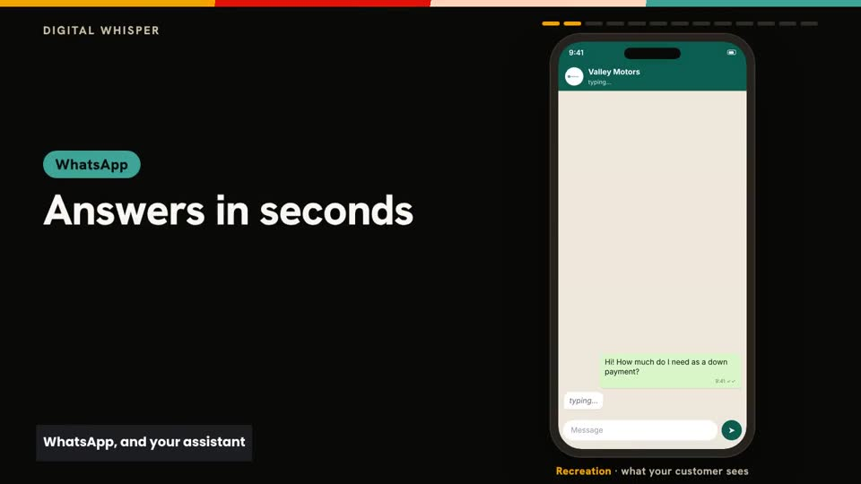
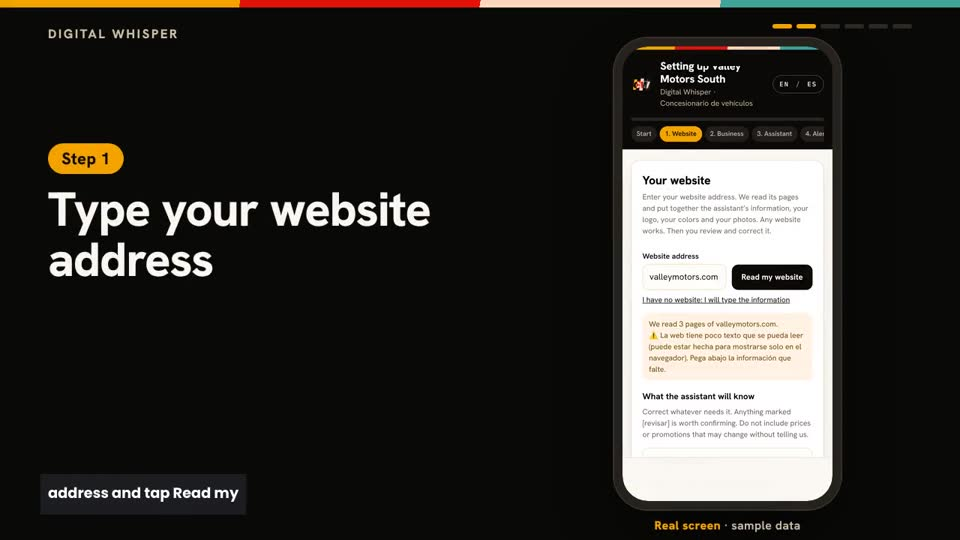
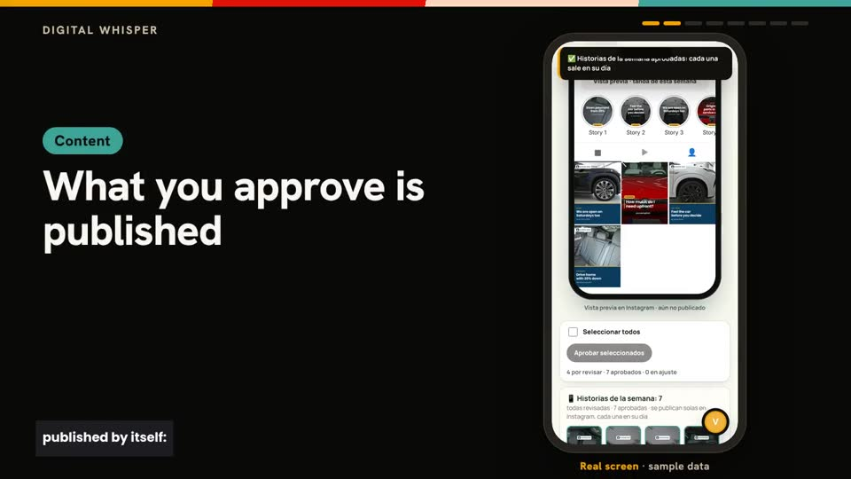

Paste your website
We read your site and build your brand: logo, colours, tone and products. No website? Tell us in two minutes.
Digital Whisper serves your customers on WhatsApp and Instagram, listens to what they ask and turns it into your week's content, in your brand.
Illustration of the dashboard with sample data.

We read your site and build your brand: logo, colours, tone and products. No website? Tell us in two minutes.

Before connecting anything you see pieces in your brand and a sample conversation from your assistant.

You connect Instagram or WhatsApp with a step-by-step guide and approve your week. From there it runs itself.
It answers with your business information, in your tone. What it does not know goes to a person.
Every complaint and special request becomes a case with area and priority. Nothing gets lost in a chat.
Posts, carousels and stories with your colours, fonts and product. You approve; they publish themselves.
Vertical videos with voice-over, made with your photos.
What they ask, what they complain about and what worked, every week.
Claude or ChatGPT can see your dashboard, approve and help connect channels, with the permissions you grant.
Cases and alerts reach the phone of whoever solves them.
You approved it on Sunday. It publishes itself, on time.
The assistant answers with your information. A detail is missing, so it opens a case and notifies your team.
Your product, your colours, your copy.
It is logged with priority and reaches the area that solves it. You see it in the dashboard.
What people asked today and what is worth posting next week.
On WhatsApp and Instagram, any time, with your hours and dishes.
Which dishes are asked about most and what people complain about, weekly.
Pieces with your photos, ready to approve.
The assistant answers from your catalogue; what it does not know goes to your team.
Templates with your product cut-out, your colours and your fonts.
You approve on Sunday; the week publishes itself.
With area, priority and a notice to the right person.
The assistant takes the details and notifies the adviser.
What people asked most this week becomes a post.
Clear answers, never promising what is not in your information.
Every complaint is logged and reaches the right area.
What people ask and how it changes month to month.
To start answering and posting consistently.
For brands that post every day.
For teams, several branches or high volume.
Plans are discussed after the trial, based on what you need.
No. Every piece waits for your approval. If you want, you can save backups you already approved so your account does not go quiet on a week you could not review.
No. Onboarding walks you through, with direct links to every screen. If you use Claude or ChatGPT, your AI guides you.
Nobody. You paste them in a protected window, they are stored encrypted and never shown again. The assistant never asks for them in chat.
No. It only uses what is in your information. A price, percentage or date that is not there is removed before it reaches the image.
Yes, on the same number.
Yes. You paste how you publish today (how many pieces, which days, what times, your rules) and we set up your week the same way for you to review.
Spanish and English, in the dashboard and the assistant.
The trial is free, with no card, and has an end date. When it ends you choose a plan; nothing is deleted.
Try it free with your real customers first. Plans are discussed based on what you need.
With your real customers. No card. Access is by approval: we reply by email.